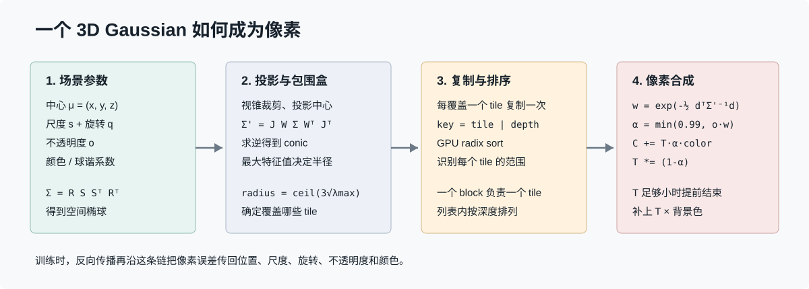

Render Path
一个 3D Gaussian 如何成为屏幕像素
不要把 Gaussian Splatting 只记成“投影、排序、混合”。这一章选择一个高斯，沿 GraphDECO 官方实现从 Python `render()` 走进 C++/CUDA，直到 `renderCUDA()` 写出某个像素；然后用一组具体数字把每一步算出来。

一句话模型
一个带体积、方向、颜色和透明度的 3D 椭球
-> 从当前相机看成一个 2D 椭圆
-> 找出它影响的瓦片和像素
-> 与同一像素上的其他高斯按深度做前向后透明合成
-> 得到像素颜色“点”只给出位置；Gaussian 还携带空间影响范围。正是这个连续的影响范围，使它既能表达表面，又能对位置和形状求梯度。
1. 一个 Gaussian 究竟存什么
| 参数 | 代码中的表示 | 物理直觉 |
|---|---|---|
| 中心 μ | `_xyz` / `means3D` | 椭球位于三维空间哪里。 |
| 尺度 s | 内部存对数，`exp()` 后为正尺度 | 沿三个局部轴分别有多宽。 |
| 旋转 q | 归一化四元数 | 三个尺度轴朝向哪里。 |
| 不透明度 o | 内部 logit，`sigmoid()` 后进入 0 到 1 | 高斯最多能遮住多少后景。 |
| 颜色 | RGB 或球谐系数 SH | SH 让颜色随观察方向改变。 |
尺度矩阵 `S` 与旋转矩阵 `R` 共同构造三维协方差 `Σ`。概念上可写成 `Σ = R S Sᵀ Rᵀ`。协方差必须半正定，所以实现不直接任意优化九个矩阵元素，而是优化尺度和旋转再组合。官方 `GaussianModel.setup_functions()` 同时用 `exp`、`sigmoid` 和四元数归一化保证参数落在合理域内（GaussianModel 源码）。
2. Python 如何把参数交给 CUDA
train.py
-> gaussian_renderer.render(camera, gaussians, ...)
-> GaussianRasterizationSettings(camera matrices, FoV, image size, ...)
-> GaussianRasterizer(...)(means3D, opacity, scale, rotation, SH, ...)
-> torch.autograd.Function.apply(...)
-> _C.rasterize_gaussians(...)
-> CudaRasterizer::Rasterizer::forward(...)`gaussian_renderer.render()` 收集相机矩阵、视场角、图像尺寸和 Gaussian 张量。它还创建一个需要梯度的 `screenspace_points` 占位张量，用来获得屏幕空间中心的梯度，供 densification 判断哪里需要增加高斯（Python render 入口）。
`diff_gaussian_rasterization` 用自定义 `torch.autograd.Function` 包住 CUDA 扩展。forward 保存几何、binning 和图像辅助缓冲，backward 再读取这些中间结果，把像素梯度传回 means、opacity、scale、rotation 和 SH（Autograd 包装层）。
3. 从空间椭球投影成屏幕椭圆
中心点用普通透视投影得到屏幕坐标。形状不能只投影三个轴端点，因为透视除法是非线性的；实现采用投影在高斯中心附近的雅可比 `J` 做局部线性近似：
相机坐标 (X, Y, Z)
u = fx * X / Z + cx
v = fy * Y / Z + cy
J = [ fx/Z, 0, -fx*X/Z² ]
[ 0, fy/Z, -fy*Y/Z² ]
Σscreen = J W Σworld Wᵀ Jᵀ`W` 是世界到相机的线性部分。官方 CUDA 的 `computeCov2D()` 实现这一步，并给二维协方差的对角线各加 `0.3` 作为低通保护，避免高斯缩成亚像素后出现不稳定闪烁（computeCov2D）。
4. 完整数值算例
假设相机分辨率为 `800 × 600`，`fx = fy = 800`，主点 `(cx, cy) = (400, 300)`。某个高斯中心在相机坐标中是 `(0.2, -0.1, 2.0)` 米，没有额外旋转，三个标准差是 `(0.02, 0.01, 0.03)` 米。
屏幕中心：
u = 800 × 0.2 / 2 + 400 = 480
v = 800 × (-0.1) / 2 + 300 = 260
Σ3D = diag(0.02², 0.01², 0.03²)
= diag(0.0004, 0.0001, 0.0009)
J = [400, 0, -40]
[ 0, 400, 20]
Σ2D = J Σ3D Jᵀ + 0.3I
≈ [65.74, -0.72]
[-0.72, 16.66]两个特征值约为 `65.75` 和 `16.65`，所以椭圆主轴标准差约为 `8.11 px` 和 `4.08 px`。CUDA 用 `ceil(3 × sqrt(λmax))` 作为圆形包围半径，因此这个高斯会以约 `25 px` 半径参与 tile 覆盖计算。椭圆本身仍由逆协方差精确判断，不是被画成圆（preprocessCUDA 的 conic 与半径）。
5. 为什么要复制成 tile-depth 键
直接让每个像素遍历场景中的全部高斯，成本是“像素数 × 高斯数”。官方实现先计算每个高斯覆盖的 tile 数，再为它覆盖的每个 tile 生成一个副本，键的高位是 tile ID、低位是浮点深度位模式。随后使用 GPU radix sort，把同一 tile 的高斯聚到一起，并在 tile 内按深度排列。
FORWARD::preprocess()
-> tiles_touched
-> InclusiveSum() 得到副本写入偏移
-> duplicateWithKeys() 生成 [tile | depth] 键
-> cub::DeviceRadixSort::SortPairs()
-> identifyTileRanges()
-> FORWARD::render()这不是改变 Gaussian 本身，而是建立本帧的工作清单。一个很大的高斯会进入多个 tile；一个被裁剪或半径为零的高斯不会进入后续列表（Rasterizer::forward）。
6. 一个 CUDA 线程如何算一个像素
一个 CUDA block 负责一个 tile，一个线程对应一个像素。线程从 tile 的排序列表中分批读取高斯中心和 `conic_opacity` 到共享内存。对屏幕偏移 `d`，指数权重与 alpha 为：
power = -0.5 × dᵀ Σscreen⁻¹ d
weight = exp(power)
alpha = min(0.99, opacity × weight)
color += transmittance × alpha × gaussianColor
transmittance *= (1 - alpha)若 `alpha < 1/255`，贡献太小就跳过；若下一步透射率 `T < 0.0001`，后面的高斯几乎不可见，线程提前结束。最后写出 `C + T × background`（renderCUDA）。
7. 把数值算例落到一个像素
继续使用上面的高斯。取像素 `(488, 264)`，它离中心约 `(8, 4)` 像素。代入逆协方差后，`dᵀΣ⁻¹d ≈ 1.93`，因此权重约为 `exp(-0.965) ≈ 0.38`。若高斯 opacity 为 `0.7`：
alpha ≈ 0.7 × 0.38 = 0.266
高斯颜色 = (1.0, 0.2, 0.1)
背景颜色 = (0.05, 0.05, 0.05)
输出 ≈ alpha × 高斯颜色 + (1-alpha) × 背景
≈ (0.303, 0.090, 0.063)这解释了“splat”并不是把一个彩色圆片贴到屏幕上：同一高斯对不同像素的贡献由椭圆高斯函数连续衰减。
8. 训练为什么能改回三维参数
随机取训练相机
-> render 得到图像
-> L1 + (1 - SSIM) + 可选深度正则
-> loss.backward()
-> CUDA backward 计算各参数梯度
-> optimizer.step()
-> densify / prune 改变 Gaussian 集合官方 `train.py` 当前训练循环在随机相机上渲染，并组合 L1、SSIM 与可选逆深度损失，然后调用 `loss.backward()`（训练循环）。可微不是“模型知道正确答案”，而是每个像素误差都能沿投影、权重与混合运算求导，告诉参数朝哪个方向微调。
9. 传统点云、Mesh 与 NeRF 的区别
| 表示 | 基本单元 | 像素如何产生 | 主要代价 |
|---|---|---|---|
| 点云 | 位置 + 可选颜色 | 画点或人为扩大 point sprite | 容易有洞，缺少连续表面。 |
| Mesh | 顶点 + 三角形 + 材质 | 三角形光栅化与深度测试 | 重建拓扑和复杂外观较难。 |
| NeRF | 隐式辐射场网络 | 沿光线多点采样并体渲染 | 每像素需要多次网络查询。 |
| 3DGS | 显式可优化高斯椭球 | 投影椭圆并透明合成 | 排序、过绘制、显存与透明混合近似。 |
10. 读源码时要区分的边界
- 论文公式与代码约定：矩阵转置次序可能因 GLM 行列主序和存储约定不同，先核对坐标约定再逐字符比较。
- 包围半径与真实椭圆：半径只用于快速找 tile；真正像素权重使用 inverse covariance，也就是 conic。
- 全局排序与 tile 排序：实现排序的是高斯的 tile 副本键，不是生成一份简单的全场景高斯数组。
- 训练 rasterizer 与 viewer：训练要求保存中间量并支持 backward；实时 viewer 可以选择不同的数据布局和渲染 API。
源码与论文
- Kerbl 等，3D Gaussian Splatting for Real-Time Radiance Field Rendering，ACM TOG / SIGGRAPH 2023。
- GraphDECO，gaussian-splatting 官方实现，本页复核提交 `54c035f7`。
- GraphDECO，diff-gaussian-rasterization，本页复核提交 `59f5f77e`。
资料等级：A | 最后复核：2026-09-15 | 数值算例是对官方公式的教学化计算，属于可复算推导。